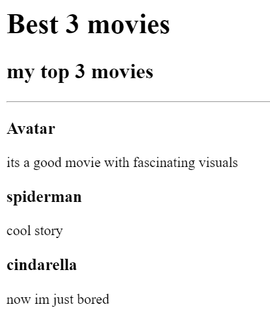

green
yellow
blue
It's My Birthday!
On the 22th June
What to bring:
Baloons (I love baloons)
Cake (I'm really good at eating)
An appetite (There will be lots of food)
This is where you need to go:
Google map link

contact me